СберВыросла от консультанта до руководителя офиса. Первое повышение получила уже через 6 месяцев, выполняла и перевыполняла планы продаж
в дизайне: понимаю, что на самом деле нужно пользователю
2020–2022
АК БАРС БанкМенеджер по работе с клиентами. Увеличила продажи инвестиционных и кредитных продуктов, получила награды за результаты в Северо‑Западном регионе. 5 месяцев исполняла обязанности руководителя отделения
в дизайне: защищаю решения и договариваюсь с командой
2022–2023
GeekBrainsМенеджер по продажам. Выполнила план на 170% и несколько раз первой в команде закрывала месячный план. Разбиралась, почему кандидаты и заказчики отказываются
в дизайне: ищу, почему человек отказывается, и убираю эту причину
2023–2025
КонтурМенеджер по подбору персонала. Сама вела собеседования и аналитику, с заказчиками составляла портрет кандидата — по сути, персону в UX. Сложную вакансию закрыла за 2 недели вместо 5+ месяцев
в дизайне: провожу интервью и собираю портрет пользователя
2025–2026
Яндекс ПрактикумПрошла обучение по программе «Дизайнер интерфейсов» — 444 часа. Освоила все необходимые инструменты и создала 7 проектов
сейчас
UX/UI‑дизайнерОткрыта к предложениям о работе и новым проектам
что умею
Навыки
Сильная сторона — понимаю людей: 9 лет в продажах и подборе персонала
Дизайн
Компоненты, Auto Layout, варианты и стили в Figma
Дизайн‑системы и UI‑киты — доработка и с нуля
Интерактивные прототипы
Типографика, композиция, цвет, иерархия
Исследования
Проведение пользовательских интервью
Анализ конкурентов
Job Stories, User Flow
Вайрфреймы, состояния экранов, UX‑тексты
Работа с людьми
До 10 собеседований в неделю в рекрутинге
Поиск кандидатов, аналитика, обсуждение задач с заказчиками
Разбираюсь в логике продукта через диалог с командой
Понятные макеты и пояснения для разработки
как работаю
AI в работе
AI ускоряет рутину, а решения принимаю я
Активно использую в работе Claude и ChatGPT: они берут на себя рутину, а я больше времени уделяю пользователям и решениям.
Исследования
Разбор расшифровок интервью: ищу повторяющиеся боли и точные цитаты
Сводные таблицы по конкурентам
Каждый вывод сверяю с исходными ответами респондентов
UX‑тексты
Варианты текстов для кнопок, ошибок и пустых состояний
Проверка на понятность и единый тон
Редактура описаний кейсов
Вайбкодинг
Этот сайт: перенесла портфолио из презентации в код вместе с Claude
Адаптив, анимации и правки по обратной связи
Публикация на GitHub Pages
контакты
Поработаем над новым кейсом вместе?
Напишите в Telegram или на почту — обсудим вашу задачу.
Функция совместного просмотра для онлайн‑кинотеатра
#UX‑исследование
#конкурентный анализ
#гипотезы
#wireframes
#edge cases
#Figma
задача
Встроить в сайт совместный просмотр: создать сессию, пригласить друзей, смотреть синхронно и общаться. Просто, без визуального шума и строго по готовому UI‑киту.
моя роль
Провела 5 интервью и разбор 5 конкурентов, сформулировала 8 гипотез. Сама собрала вайрфреймы и UI по готовому киту.
что спроектировала
01
Создание сессииоткрытая или закрытая, ссылка‑приглашение
02
Вход в закрытую сессиюзапрос админу и экран ожидания у гостя
03
Синхронный просмотрадмин выдаёт права на управление плеером
04
Чат и аудиосвязьпанели не мешают смотреть и скрываются
05
Оценка фильмаокно оценки после окончания просмотра
исследование
5интервью
5конкурентов
8гипотез
экраны
Главная страница
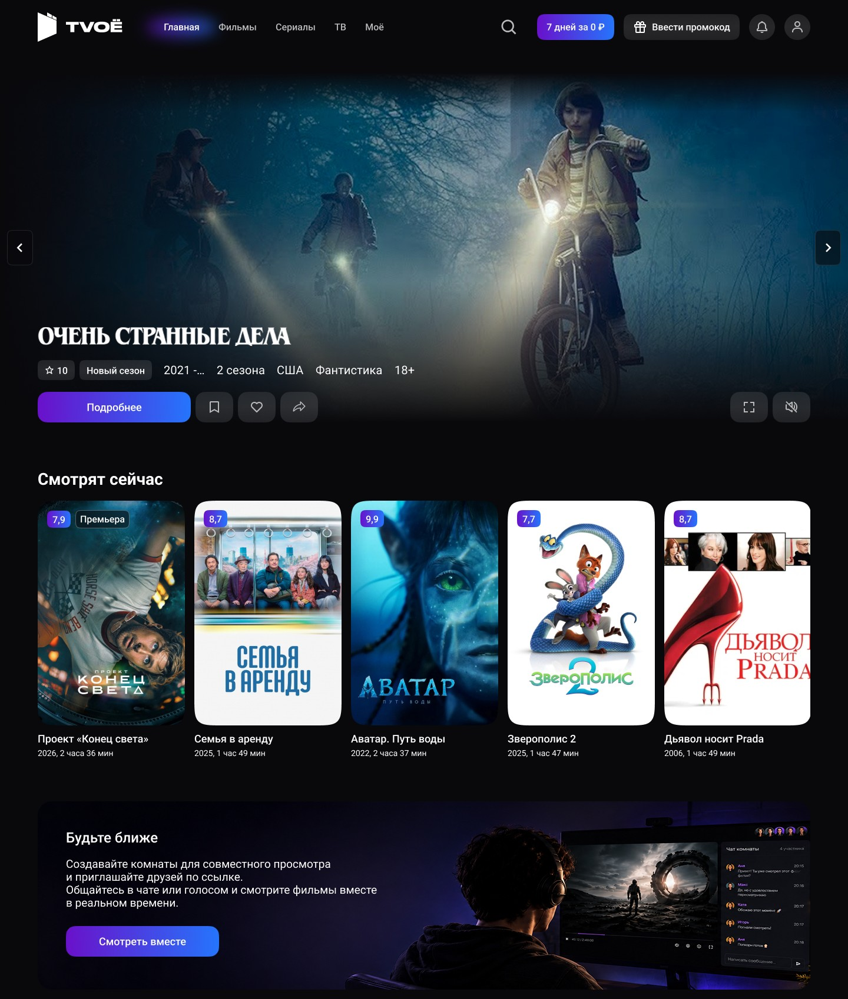
Главнаябаннер функции сразу после подборки «Смотрят сейчас»
Точка входа в совместный просмотр
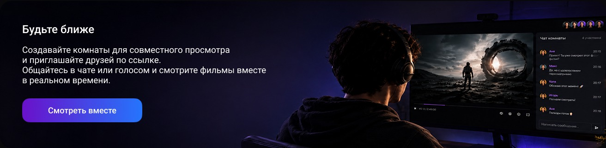
Баннер «Будьте ближе» на главной рассказывает о функции и ведёт в создание комнаты по кнопке «Смотреть вместе».
решения в баннере
01
Заголовок о ценности«Будьте ближе» говорит о ценности, а не о функции
02
Сценарий в одной фразекомната, ссылка, чат и голос
03
Одна акцентная кнопкаведёт сразу в создание комнаты
экраны
Создание комнаты
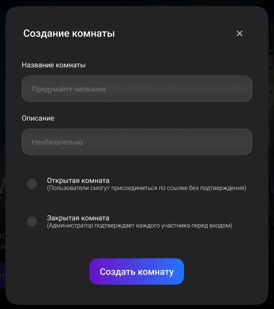
01 · Форманазвание, описание и тип комнаты
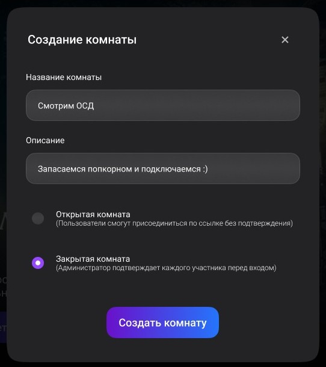
02 · Закрытая комнатаадмин подтверждает каждого участника перед входом
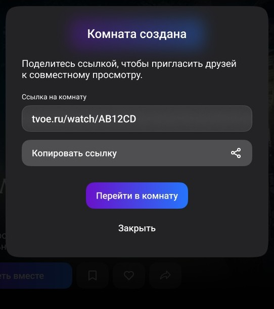
03 · Комната созданассылку можно скопировать или поделиться, а затем перейти в комнату
два поля, один клик — и можно звать друзей
экстренные сценарии
Вход по ссылке
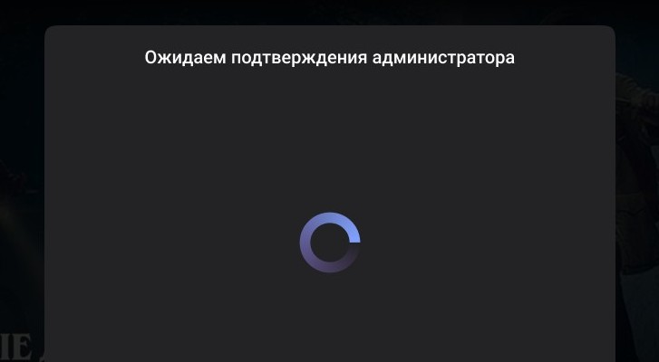
01 · Ожиданиегость перешёл по ссылке и ждёт, пока админ подтвердит вход
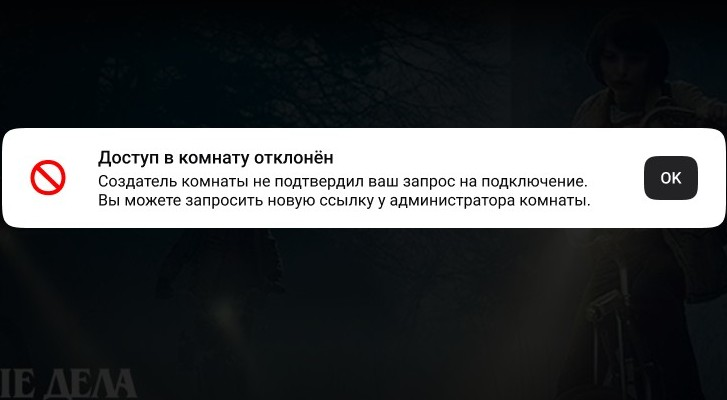
02 · Доступ отклонёнадмин не подтвердил запрос — можно попросить у него новую ссылку
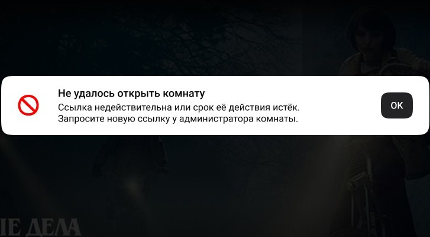
03 · Ссылка недействительнассылка неверная или её срок истёк — подсказываем, что делать дальше
ни одного тупика: из любой ошибки понятно, что делать дальше
экраны
Комната до просмотра
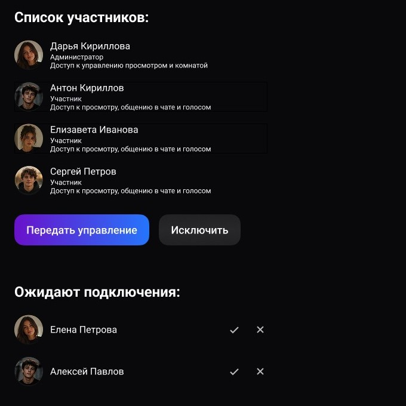
01 · Участники и правароли и доступы у каждого; админ передаёт управление, исключает и одобряет вход в закрытую комнату
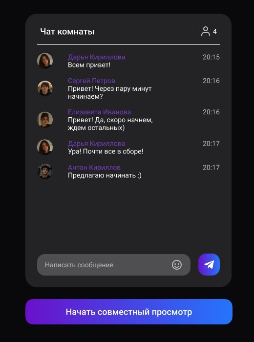
02 · Чат и стартобщение до старта, счётчик участников; «Начать совместный просмотр» запускает сеанс для всех
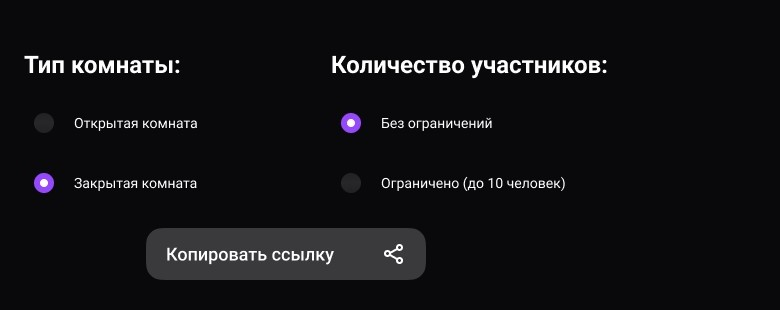
03 · Настройки комнатытип, лимит участников и копирование ссылки
экраны
Совместный просмотр
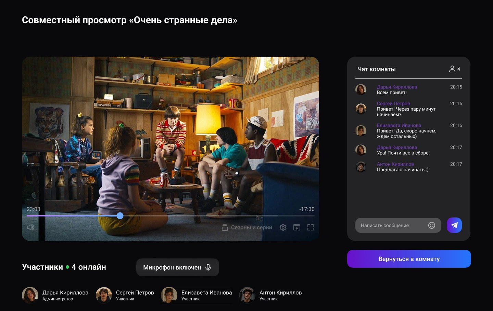
Синхронный просмотр с чатомплеер, чат комнаты, участники онлайн и кнопка микрофона для аудиосвязи
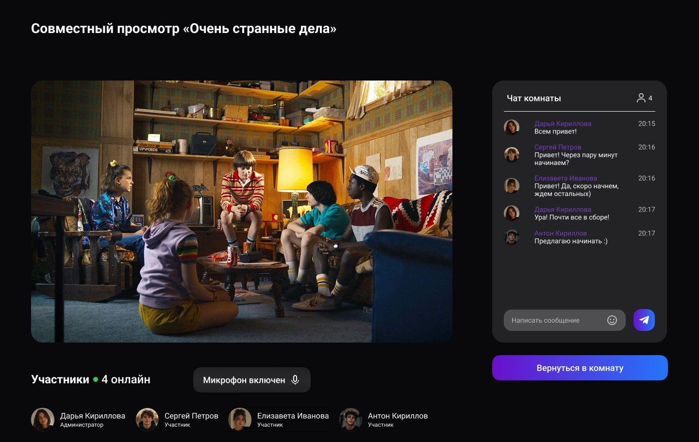
01 · Панель плеера скрыта
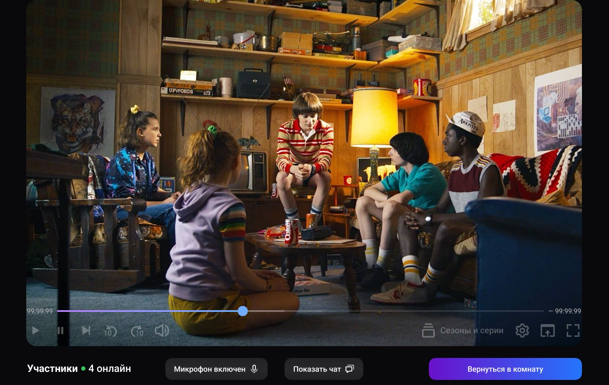
02 · Полный экран без чата
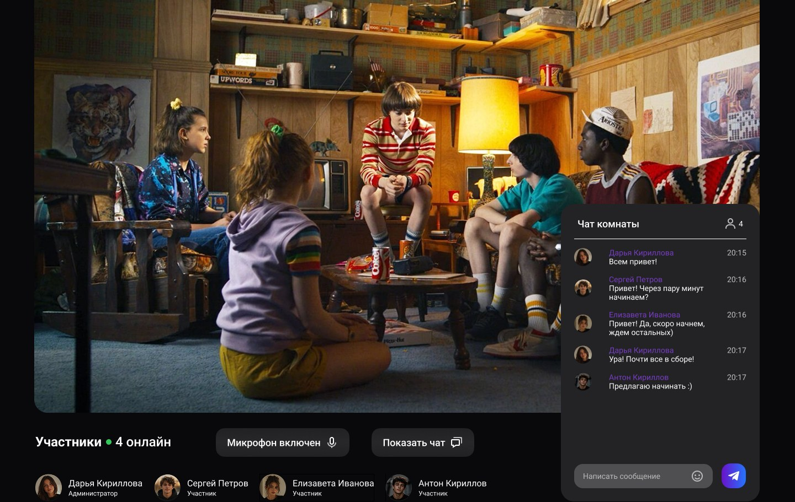
03 · Чат поверх видео
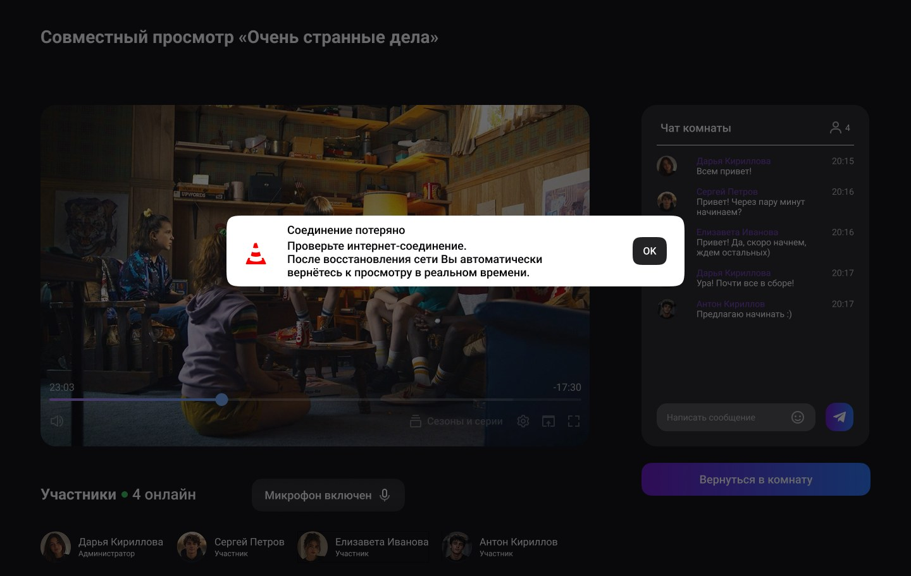
04 · Ошибка соединения
итоги
Что получилось
результат
Полный сценарий совместного просмотра: от баннера на главной до оценки фильма. Все экраны и состояния, включая ошибки, сделаны строго по ТЗ и UI‑киту.
Делала сама: исследование, вайрфреймы, UI.
ключевые решения
01
Закрытая комнатаадмин подтверждает каждого гостя перед входом
02
Общение не мешает просмотручат скрывается, в полном экране идёт поверх видео
03
Понятные ошибкипри отказе или потере связи подсказываем, что делать
Учебная фича для Яндекс Путешествий: планирование сложного маршрута
#управление командой
#UX‑исследование
#User Flow
#дизайн‑система
#юзабилити‑тестирование
задача
Спроектировать раздел, где сервис сам подбирает маршрут с пересадками на разных видах транспорта, а билеты оплачиваются одним заказом.
моя роль
Менеджер и дизайнер. Ставила сроки этапов, распределяла задачи, вела встречи и фиксировала договорённости, собрала исследование в общий файл и сдала проект на ревью.
что спроектировала
01
Точка входапереход к сложным маршрутам с главной страницы
02
Фильтры и сортировкасамые быстрые и дешёвые, без визы, без нужного транспорта
03
Оплатапереход к оплате всего маршрута одним заказом
04
Экран успехабилеты на почту, ссылка на скачивание и возврат на главную
проект
2спринта
4моих раздела
5человек в команде
исследование
Что мешает собрать маршрут
исследование команды
5конкурентов в анализе
6критериев сравнения
8глубинных интервью
6гипотез подтвердились
что мешает пользователям
что сделали в сервисе
ищут в разных вкладкахединый поиск по всем видам транспорта
страшно не успеть на пересадкуфильтр «время между пересадками»
непонятно, из чего маршрутсегменты, пересадки и время в пути в карточке
билеты на каждый отрезоквесь маршрут одним заказом с итоговой ценой
визы и документыфильтр «документы»: без визы, без ETA
мои экраны
Точка входа и поиск
На интервью люди рассказывали, что собирают маршрут в нескольких вкладках. Теперь сложные маршруты живут отдельной вкладкой в общем поиске, рядом с авиа и ж/д.
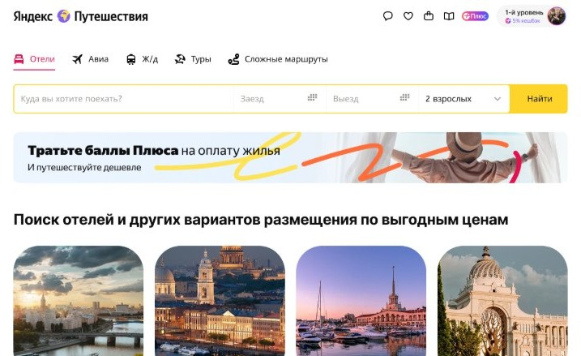
01 · Было: главная без разделатолько отели, авиа, ж/д и туры — маршрут с пересадками не собрать
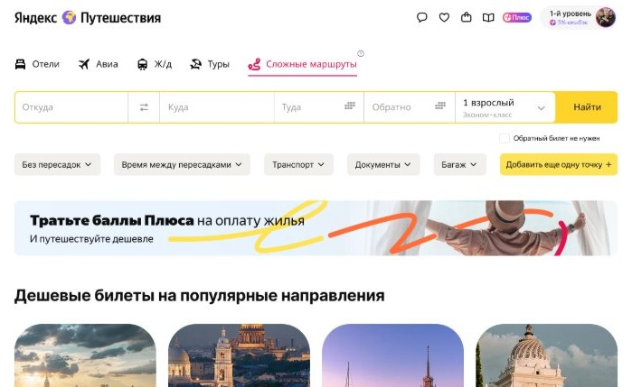
02 · Стало: новая вкладка«Сложные маршруты» в общем ряду, фильтры сразу под поиском
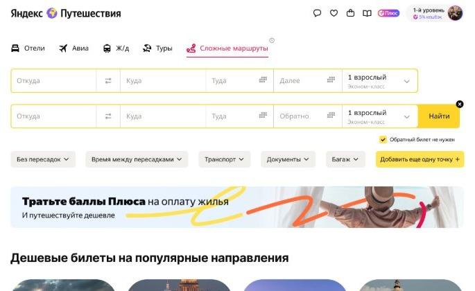
03 · Ещё одна точкакнопка «Добавить ещё одну точку» справа от фильтров и вторая строка маршрута
фича встроена в привычный поиск
мои экраны
Фильтры
Чаще всего на интервью звучал страх не успеть на пересадку. Отсюда фильтр по времени между пересадками, а фильтр по документам отсекает маршруты, где нужна виза.
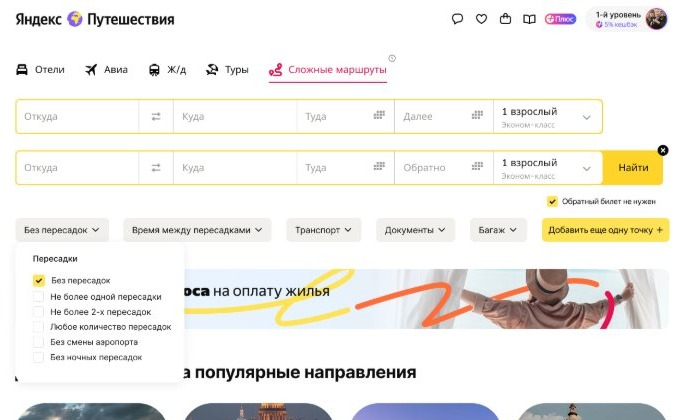
01 · Пересадкибез пересадок, не более 1–2, без смены аэропорта
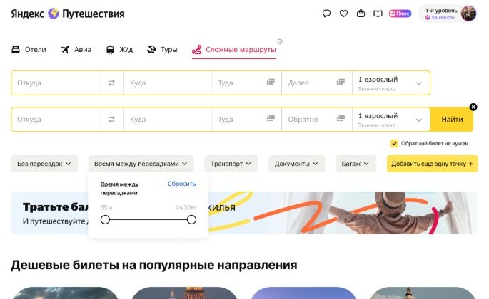
02 · Время пересадкислайдер от 55 минут до 4,5 часов
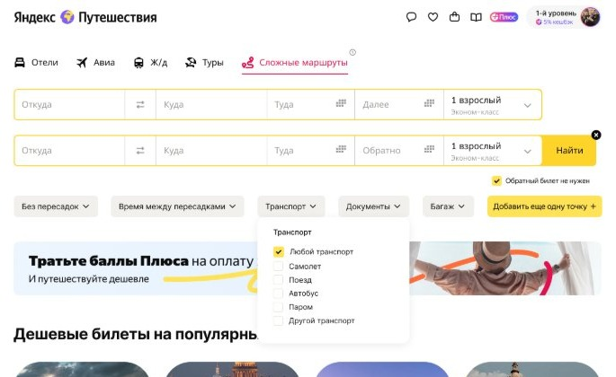
03 · Транспортисключить самолёт, поезд, автобус или паром
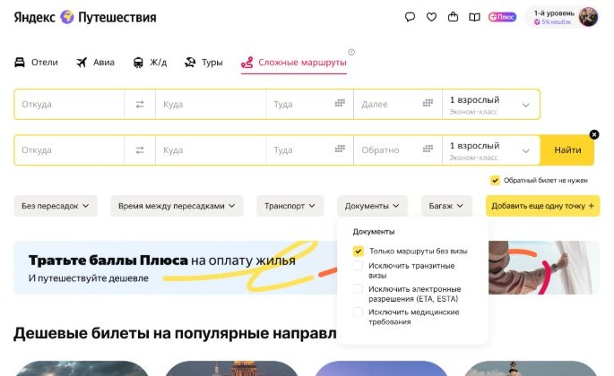
04 · Документытолько без визы, без транзитных виз и ETA
мои экраны
Выдача и сортировка
Интервью показали, что приоритеты у всех разные: кому‑то важнее цена, кому‑то время в пути. Поэтому мы не стали выбирать за пользователя, а дали метки и сортировку. На тесте люди начинали с «дешевле» или «быстрее» и уже потом включали фильтры.
02 · Сортировка5 вариантов: от «Меньше пересадок» до «Оптимальный вариант»
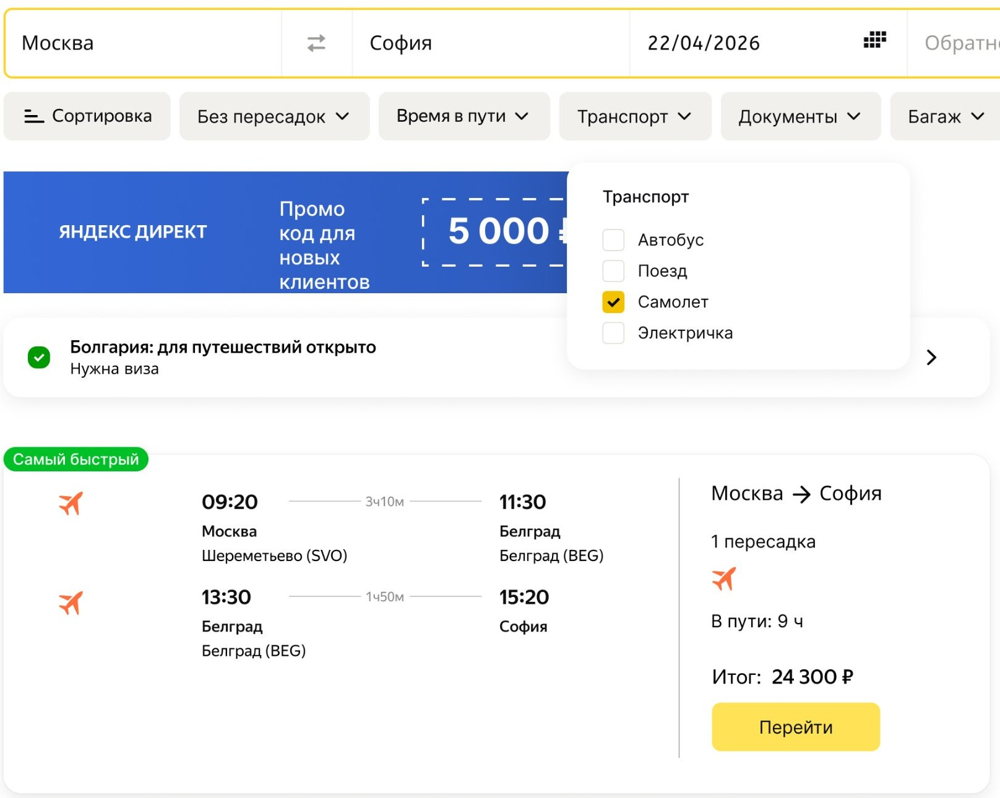
03 · Фильтр в делетолько самолёт: в выдаче остаётся один маршрут
сравнить маршруты можно за секунду
мои экраны
Бронирование
Покупать билет на каждый отрезок отдельно неудобно: на тесте эта гипотеза подтвердилась. Мы сделали так, чтобы весь маршрут оформлялся и оплачивался одним заказом.
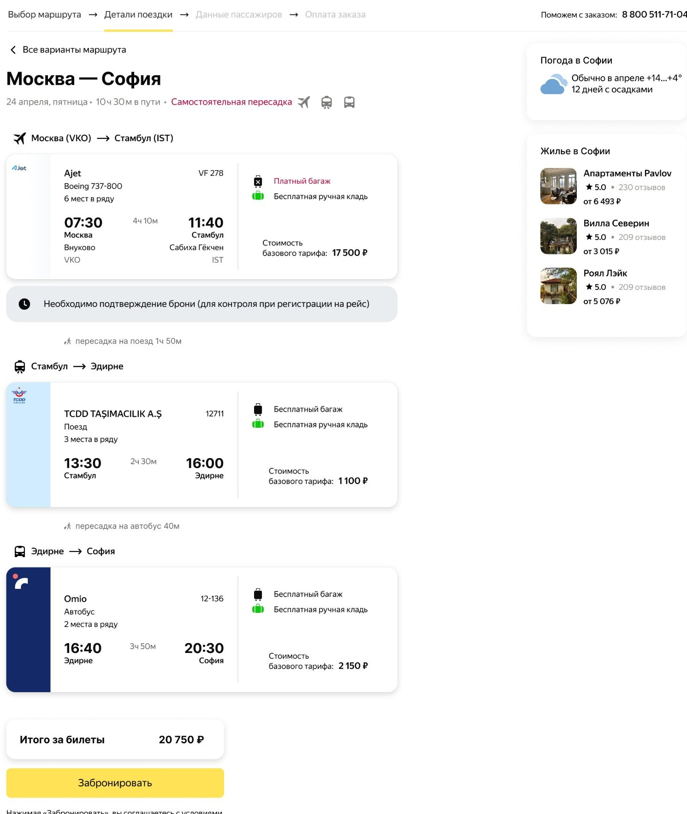
01 · Детали поездкивсе отрезки маршрута, пересадки, багаж и итог за билеты
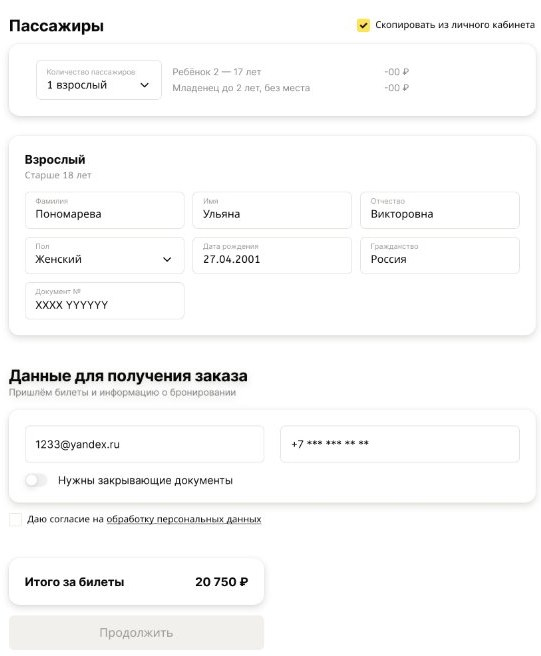
02 · Данные пассажироводна форма на весь маршрут, можно скопировать из профиля
мои экраны
Оплата и экран успеха
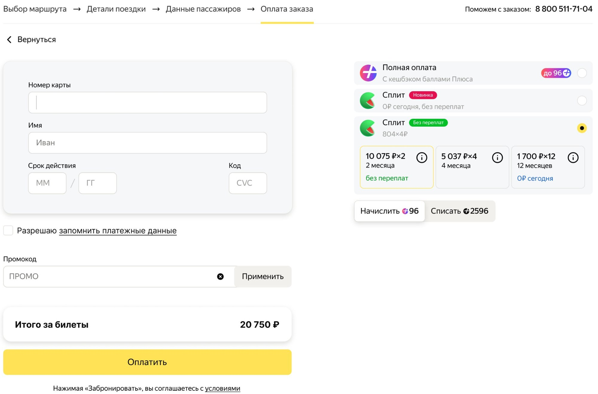
01 · Оплатавесь маршрут одним заказом, сплит и баллы Плюса
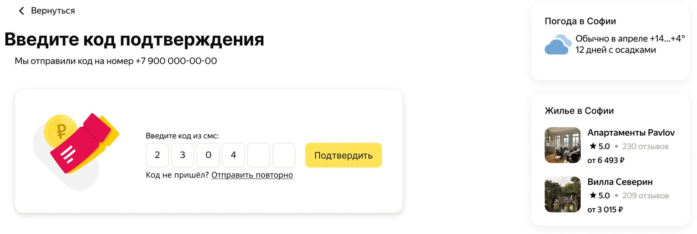
02 · Код из СМСподтверждение оплаты и повторная отправка
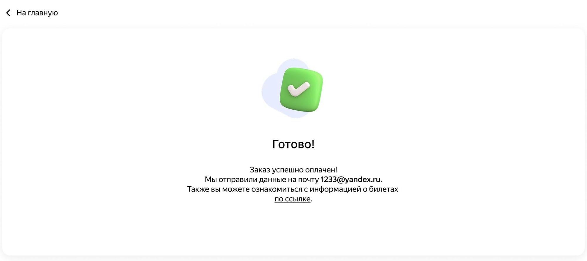
03 · Готовобилеты на почту, ссылка на билеты и возврат на главную
один заказ вместо трёх
экстренные сценарии
Ошибки и пустая выдача
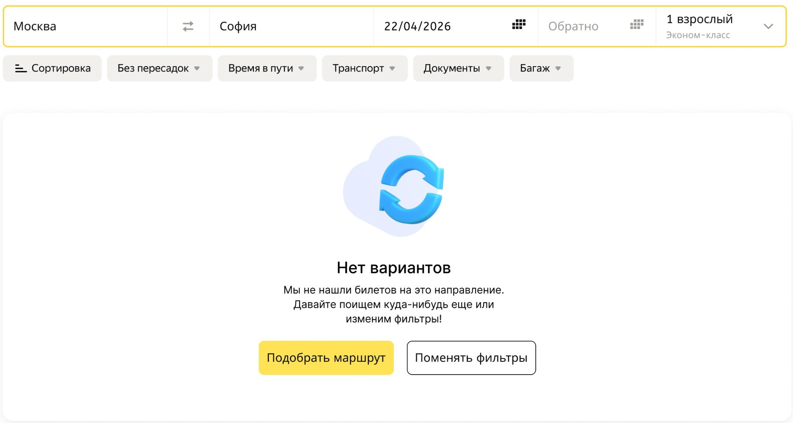
01 · Нет вариантовподобрать маршрут заново или поменять фильтры
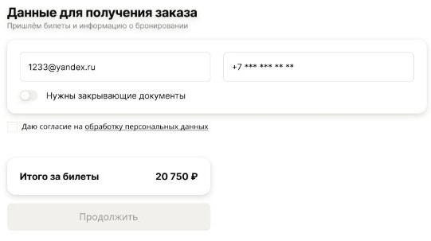
02 · Нет согласия«Продолжить» неактивна, пока не отмечено согласие на обработку данных
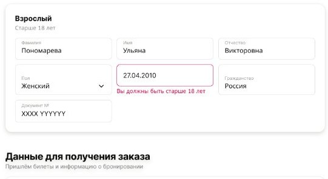
03 · Возраст«Вы должны быть старше 18 лет» — до оплаты, а не после
Сделать управление подписками прозрачным: все списания в одном месте, сумма за месяц и ближайшая дата оплаты. Проработать сценарий поиска и добавления подписки.
моя роль
Исследование — в команде из 6 человек. Вайрфреймы, UI и прототип — сама.
что спроектировала
01
Сценарии и блок‑схемыосновной, дополнительный и экстренный
02
Вайрфреймысхема переходов по эвристикам Нильсена
03
Поиск и каталогподсказки, фильтры, карточка с тарифами
04
Главный экран и аналитикасумма за месяц и ближайшее списание
05
UI‑кит и прототипAuto Layout, прототип и тест на пользователях
проект
6человек в команде
3респондента в тесте
экраны
Приветствие и онбординг
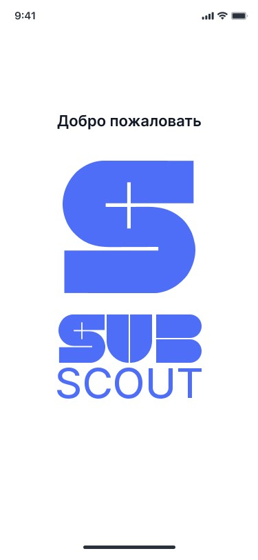
01 · Приветствиелоготип и знакомство с сервисом
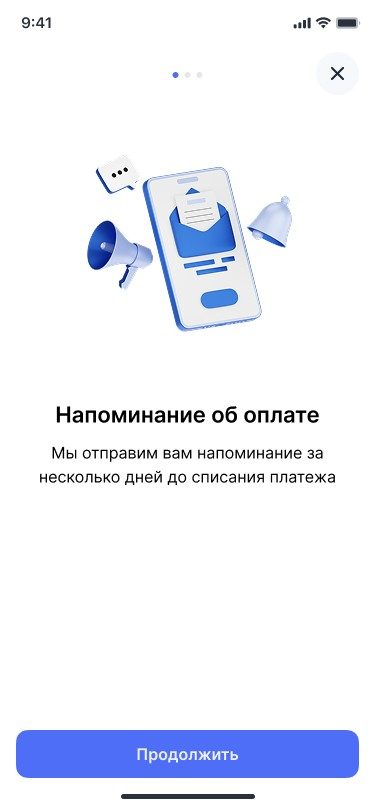
02 · Напоминанияпредупредим о списании за несколько дней
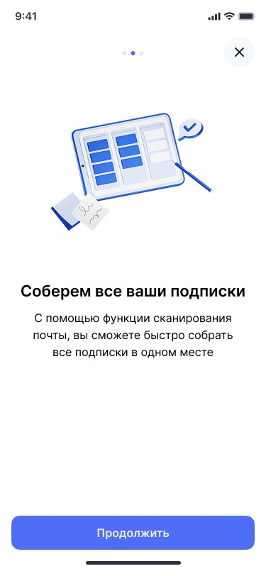
03 · Всё в одном местенайдём подписки в почте автоматически
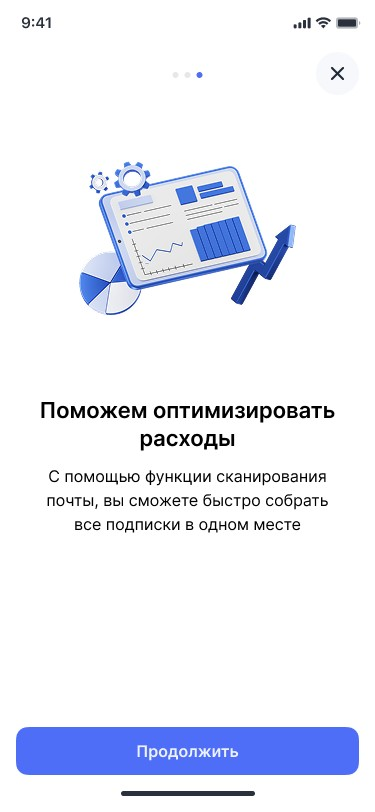
04 · Экономияпоможем сократить расходы
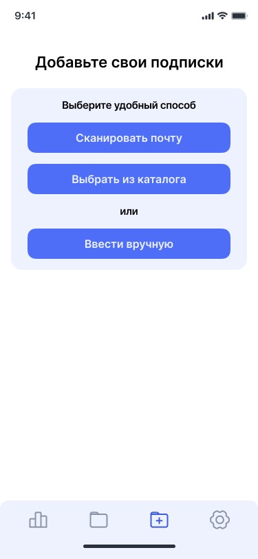
05 · Выбор способапочта, каталог или ввод вручную
экраны
Добавление через почту
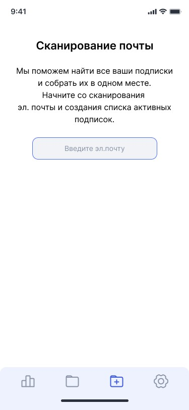
01 · Ввод почтыобъясняем, зачем сканировать почту
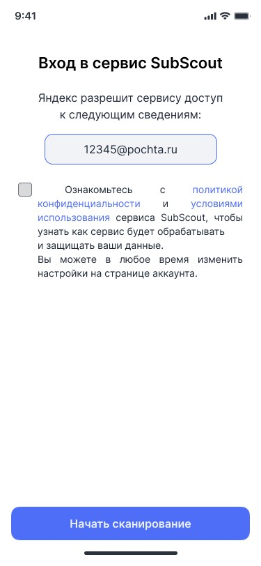
02 · Доступсначала согласие с политикой сервиса
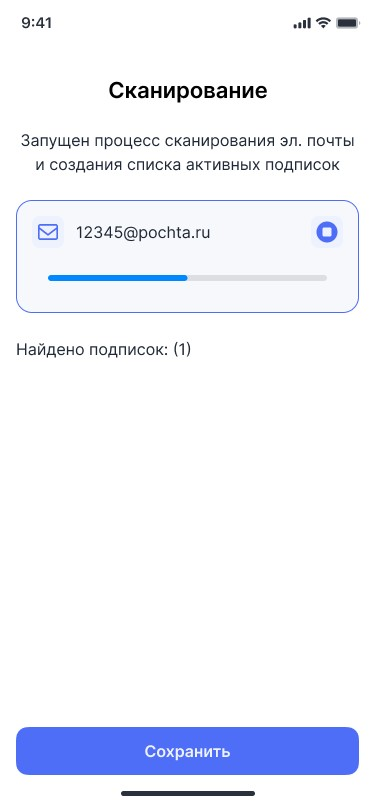
03 · Сканированиепрогресс и счётчик найденных подписок
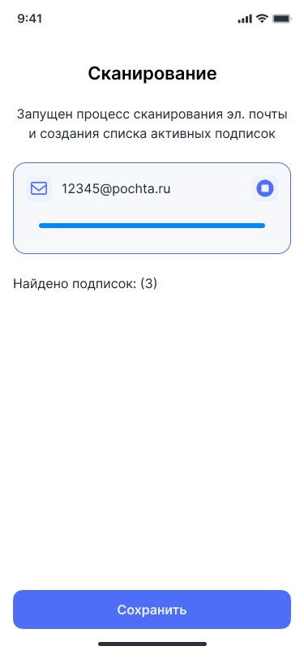
04 · Готовонайдено 3 подписки, их можно сохранить
экраны
Добавление из каталога
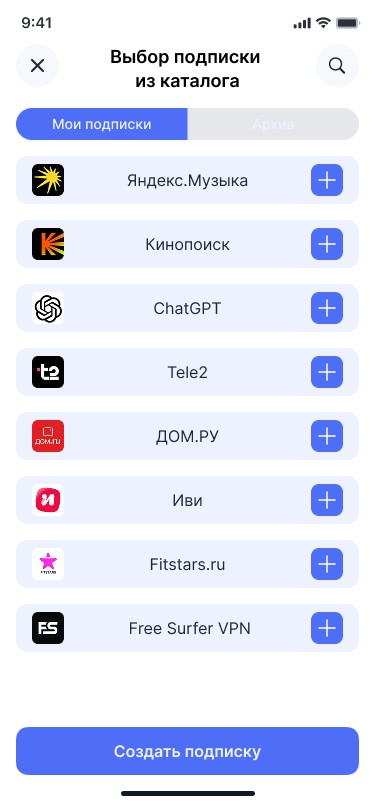
01 · Каталогпопулярные сервисы, поиск и архив
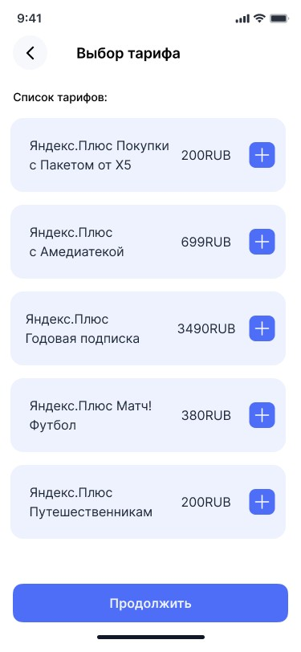
02 · Выбор тарифавсе тарифы сервиса с ценой
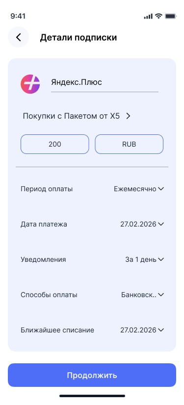
03 · Деталилоготип, тариф и сумма подставляются сами04 · Мои подпискиновая подписка в общем списке
экраны
Ручное добавление
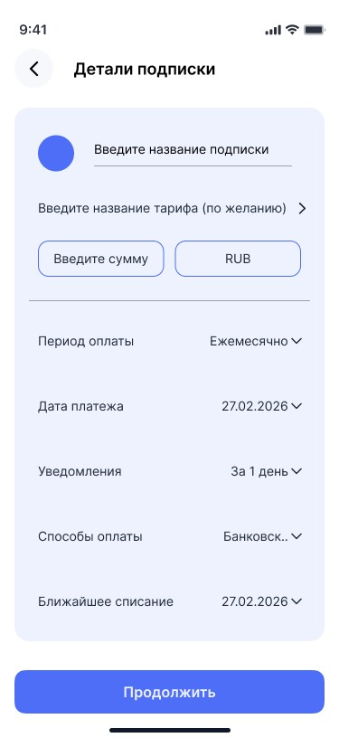
01 · Пустая формаподсказки в каждом поле
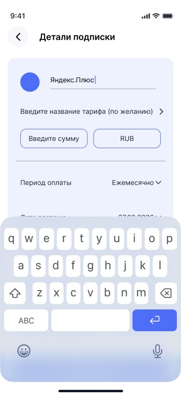
02 · Названиеввод названия сервиса03 · Тариф и сумматариф по желанию, сумма и валюта04 · Готовосвоя подписка получает нейтральную иконку
экраны
Главная и аналитика
01 · Расходы за месяцкарусель сумм, календарь списаний02 · Расходы за годлистаем карточку свайпом03 · Все расходыобщая сумма за всё время04 · Детализациясумма, число подписок и платежи по месяцам
экраны
Смена тарифа
01 · Мои подпискиЯндекс.Плюс за 200 ₽02 · Деталипереход к списку тарифов03 · Выбор тарифавыбираем годовую подписку04 · Обновленотариф и сумма заменились05 · Мои подпискиновая сумма — 3490 ₽
Сделать сайт, по которому можно изучить стиль брутализм и записаться на вебинар. Продумать экстренные сценарии регистрации и адаптив.
моя роль
Проект индивидуальный: исследование, структура, дизайн, адаптив и UI‑кит — мои.
что спроектировала
01
Главная страницастиль и тезисы, программа, проекты выпускников, спикеры
02
Форма регистрациипроверка полей и неактивная кнопка, пока форма не заполнена
03
Подтверждение почтыкод из 6 символов, таймер повторной отправки и ошибки
04
Экран успехадата, платформа и напоминание в календарь
05
Адаптиввсе экраны для десктопа, планшета и мобильного
исследование
3глубинных интервью
3сегмента аудитории
12вопросов в гайде
исследование
От интервью к решениям
Алина, 21начинающий дизайнер«нужны примеры и понятный результат»
Максим, 28практикующий дизайнер«смотрю на кейсы и экспертизу спикера»
Ирина, 35маркетолог«чёткая программа без воды»
что важно аудитории
что сделала на лендинге
сильный первый экранназвание стиля крупно, дата и кнопка «Принять участие» на первом экране
программа по пунктампрограмма из 4 блоков: от философии стиля до внедрения в проекты
примеры и кейсыблок «Проекты выпускников» с работами в стиле брутализм
экспертиза спикераблок «Спикеры»: опыт и специализация каждого
регистрация на видукнопка регистрации на первом экране и в конце страницы
экраны
Главная страница
01 · Первый экранопределение и черты стиля, дата и время вебинара02 · Программаописание вебинара по пунктам и примеры интерфейсов в стиле03 · Спикерыинформация о спикерах и переход к регистрации
экраны
Регистрация на вебинар
01 · Формадата, время и спикеры над формой — ничего не нужно помнить02 · Код из почтывидно, на какую почту ушёл код; повторная отправка — через 30 секунд03 · Успехдата и время ещё раз, напоминание в календарь и возврат назад
экстренные сценарии
Ошибки и ожидание
01 · Телефонвидно, где ошибка, введённое не стирается02 · Почтакнопка неактивна, пока ошибка не исправлена03 · Неверный кодможно сразу ввести заново или запросить новый04 · Таймерзащита от спама, после таймера — ссылка
адаптив
Один экран на трёх разрешениях
Десктоп · 1440заголовок поверх фото, описание в две колонкиПланшет · 768дата под фото, описание в одну колонкуМобильный · 375всё по центру, одна колонка
дизайн‑система
UI‑кит и стили
компоненты
код подтверждениякнопка: обычная, фокус, неактивнаяполе: подсказка, ввод, заполнено, ошибканавигация и чекбоксы
стили
палитра
текствторостепенныйакцент, ошибкафонполе с ошибкойполе
типографика + масштабы для планшета и мобильного
итоги
Что получилось
результат
Лендинг в стиле брутализм и сценарий регистрации на вебинар — от формы до экрана успеха, со всеми ошибками. Структура страницы — по выводам интервью.
Редизайн сайта доставки японской кухни в Балакове и Вольске
#глубинные интервью
#конкурентный анализ
#гипотезы
#User Flow
#вайрфреймы
#дизайн‑система
#вайбкодинг
задача
У кафе «Фьюжн» старый сайт: около 250 позиций общими списками, длинная регистрация, а после заказа гость ничего не видит до звонка в кафе. Я решила сделать заказ с телефона быстрым и предсказуемым и проверить, нужно ли кафе своё приложение.
моя роль
Исследование, сценарии, вайрфреймы и дизайн‑решения — мои. AI использовала как инструмент: для вёрстки рабочего прототипа и обработки фото. Сайт выложила на GitHub Pages.
Исследование5 конкурентов, 7 гипотез, 5 глубинных интервью и портрет
02
Сценарии и вайрфреймыосновной путь и 11 экстренных ситуаций, телефон и десктоп
03
Дизайн‑систематокены, компоненты и их состояния, светлая и тёмная тема
04
Сайтглавная, меню, карточка блюда, корзина, оформление, статус заказа, профиль
05
Работа с контентомменю короче на 38 позиций, 208 фото в одном стиле
проект
5интервью с постоянными гостями
7гипотез: 4 подтвердились, 3 частично
208карточек меню вместо 246
исследование
Что уже стало нормой в городе
Я разобрала пять служб доставки роллов, которые работают в Балакове: Лори Суши, СушиВёсла, Mone, Маркэдиа и Wasabi. Mone вообще стоит в соседнем доме с «Фьюжн». Всё, что удерживает постоянных гостей — статус заказа, повтор, бонусы, — у них живёт только в приложениях, а на сайтах этого нет.
3 из 5с приложением, в том числе ближайший сосед
0 из 5показывают статус заказа на сайте
0 из 5дают исключить продукт из меню
0 из 5показывают, сколько добрать до скидки
что увидела у конкурентов
какую гипотезу это дало
у одних подборки и метки, у других длинный список без поиска1 · в меню на 250 позиций сложно сориентироваться
«от 45 минут», «уточняйте по телефону», этапы — только в приложениях2 · гостю важно видеть каждый этап заказа
иконка «Креветка» и раздел «Без риса», но исключить продукт нельзя3 · состав приходится читать вручную
«Уже заказывали» и быстрый повтор — только в приложениях4 · большая часть заказов — повтор прошлых
бонусы есть у всех, но порог следующей скидки не видит никто5 · видимая скидка мотивирует добрать до порога
длинная регистрация на старом сайте, адреса сохраняют только приложения6 · повторный ввод данных — реальная боль
приложение у трёх из пяти, в него зовут скидкой на первый заказ7 · приложение для заказа востребовано
В список попадало только то, что видно у конкурентов или на старом сайте, меняет дизайн‑решение и проверяется вопросом о прошлом опыте. Поэтому гипотезы про фото блюд нет: фото есть у всех пяти, их делаем при любом ответе.
интервью
Пять постоянных гостей
Все пятеро заказывают в «Фьюжн» хотя бы раз в месяц. Я подбирала их так, чтобы покрыть разные сценарии: семейный ужин, компанию друзей, обед в офис, поздний заказ и самовывоз, оба города и разное отношение к приложениям. Вопросы — о последнем реальном заказе, а не о том, «пользовались бы вы».
респонденты
Екатерина28 лет · бухгалтер, Балаководоставка на семью 2–3 раза в месяц
Дмитрий35 лет · инженер на АЭСсеты на компанию по пятницам
Марина42 года · учитель, Вольсксамовывоз раз в месяц
Кирилл21 год · студентпоздние заказы с друзьями
Ольга33 года · менеджер по продажамобед в офис 1–2 раза в неделю
что услышала
«Не понимаю, приняли ли заказ вообще. А мне ещё дочь с танцев забрать» — Екатерина
«Если бы видел, что до следующей скидки 300 рублей, добрал бы что‑нибудь» — Дмитрий
«Я сначала набрала корзину, а потом оказалось, что это Балаково» — Марина
«Мне надо знать, во сколько выйти к курьеру, а не „до 60 минут“» — Ольга
неожиданная находка
Трое из пяти иногда вместо роллов берут пиццу или готовую еду в Яндекс Еде и Самокате. Не потому, что там вкуснее, а потому, что там уже сохранены адрес и прошлый заказ. Удобство перевешивает желание съесть роллы — это главный аргумент за своё приложение.
гипотезы
Четыре подтвердились, три — частично
Статус считала по одному правилу: 4–5 из 5 — подтвердилась, 2–3 — частично. Частично не значит «не делать»: ещё важно, сколько стоит ошибка для гостя и есть ли такое у конкурентов.
гипотеза и результат
что сделала в дизайне
2 · этапы заказа — подтвердилась, 5 из 5страница заказа с этапами и временем, уведомления в приложении
4 · повтор заказов — подтвердилась, 4 из 5повтор и избранное, метка «Уже заказывали» в меню
6 · повторный ввод данных — подтвердилась, 4 из 5заказ без регистрации, вход по коду, адрес в шапке
7 · спрос на приложение — подтвердилась, 4 из 5приложение на той же структуре и бонус за первый заказ в нём
1 · сложно в меню — частично, 3 из 5поиск, фильтры, метки «Хит» и «Новое»
3 · чтение состава — частично, 2 из 5фильтр «Не ем» и полный состав сетов: при аллергии ошибка опасна
5 · мотивация скидкой — частично, 3 из 5шкала «ещё N ₽ — и скидка» прямо над итогом в корзине
портрет
Анна, 31 год, Балаково
«Я не хочу изучать меню. Хочу за минуту заказать то, что точно вкусно, и знать, когда привезут». Портрет собран из ответов, которые повторились у большинства: ужин на семью в пятницу, со смартфона, одни и те же 2–3 позиции, у мужа аллергия на креветки.
боли
01
Не знает, приняли ли заказчерез 40 минут звонит в кафе
02
Ищет те же блюда зановои каждый раз вводит адрес
03
Состав сетов скрыткреветки приходится искать вручную
04
Не видит своей скидкии сколько осталось до следующей
что ей поможет
01
Этапы заказа и времяпринят, готовится, курьер в пути
02
Повтор и сохранённый адресзаказ в пару нажатий
03
Фильтр «Не ем»скрывает блюда с креветками везде, включая сеты
04
Шкала скидкивидно, сколько добрать до следующего уровня
сценарии
Повтор заказа — первая развилка
Четверо из пяти повторяют заказы, поэтому путь Анны начинается с вопроса «Повторить?»: для неё он идёт мимо меню сразу в корзину. Цифра у шага — номер гипотезы, на которой он держится.
Основной сценарий6 шагов, 1 развилка, 4 этапа заказа
экстренные ситуации
Правило для всех: гость узнаёт о проблеме сразу, там, где её можно исправить, и не теряет собранный заказ.
что случилось
как гость выходит
адрес вне зоны доставкипредупреждение до корзины, самовывоз или другой адрес
приём заказов на сегодня закончилсячасы работы видны заранее, заказ ко времени
в сете продукт из списка «Не ем»пометка в корзине, убрать или заменить блюдо
гость не вошёл в профильзаказ как гость, скидка найдётся по номеру
оплата не прошлаошибка у кнопки, корзина сохранена, оплата при получении
курьер задерживаетсяновое время на странице заказа раньше, чем гость позвонит
вайрфреймы
Акцент — на том, что выросло из исследования
Вайрфреймы я рисовала по структуре сайта без визуального стиля. Красным отмечен элемент, который появился из интервью, — у каждого есть номер гипотезы.
01 · Выбор блюдстатус работы на первом экране, «Уже заказывали» и «Не ем» в фильтрах, КБЖУ в карточке02 · Заказшкала скидки над итогом, адрес подставлен, этапы заказа и повтор
экраны · телефон
От главной до статуса заказа
01 · Главнаясразу видно, работает ли кафе и можно ли заказать ко времени02 · Менюразделы, подборки и фильтр «Не ем»03 · Блюдовыбор варианта, состав и КБЖУ04 · Корзинаадрес доставки и шкала скидки05 · Оформлениебез регистрации, адрес уже подставлен06 · Статуспять этапов с пояснением — без звонка в кафе
экраны · десктоп
Те же решения на широком экране
С компьютера заказывают на компанию и в офис. Фильтры встают строкой над сеткой из четырёх карточек, а шкала скидки и итог — в правую колонку корзины, чтобы порог был виден до оплаты.
01 · Главнаястатус работы и условия доставки на первом экране02 · Менюразделы, подборки и фильтры над сеткой03 · Корзинашкала скидки и итог в правой колонке04 · Заказэтапы рядом с составом и кнопка «Повторить»
контент
Меню короче, фото — в одном стиле
На старом сайте у Калифорнии три отдельные карточки, у гунканов — девять. Похожие блюда я объединила в одну карточку с выбором начинки, соуса или подачи. Фото со старого сайта были разного масштаба, под наклоном и обрезаны краем кадра: я привела их к одному правилу — белый фон, кадр 4:3, одинаковые поля, наклонённые блюда выровнены, а обрезанный край совпадает с краем карточки.
Сейчас на сайте фото с официального сайта кафе, обработка лишь выравнивает их между собой. В идеале нужна фотосессия в одном стиле или нейрофотосессия на основе имеющихся снимков: тот же ракурс, свет и фон для всех блюд.
246 → 208карточек в меню
15групп блюд стали карточками с выбором
208фото в одном стиле
57 → 6 МБвес фото после перевода в JPEG
Сверху — как было, снизу — после обработкинаклон выровнен, масштаб и поля одинаковые, срез совпадает с краем
как сделать нейрофотосессию
Идея — не придумывать блюда заново, а переснять каждое существующее фото в одном стиле. Исходник задаёт, что именно лежит в кадре, эталонный кадр — как это снято.
01
Эталондовести до идеала один кадр, например Филадельфию. Он станет образцом стиля для всех остальных
02
Пакетная генерациядля каждого блюда загрузить исходное фото и эталон, в промт подставить название и состав из меню — так модель не выдумывает ингредиенты
03
Сверка с менюпроверить начинку, количество кусочков и вес на вид. Фото должно совпадать с тем, что привезут, иначе это обман гостя. Брак — заново
04
Единая обработкапрогнать готовые кадры через тот же скрипт: 4:3, одинаковые поля, JPEG
где сделать
ChatGPT и Gemini — редактируют по исходному фото, лучше всего сохраняют само блюдо
Flux Kontext (через Krea или fal.ai) — точечная замена фона и света без перерисовки блюда
Midjourney со стилевым референсом — самый ровный стиль серии, но блюдо может «уплыть»
Шедеврум и Kandinsky — работают без VPN, но конкретное блюдо держат хуже
Photoroom — если нужно только сменить фон и тень пачкой
промт · подставить блюдо и состав
Возьми блюдо с первого фото и сними его заново в стиле второго фото (эталон).
Блюдо: Калифорния №1, 248 г. Состав: рис, креветка, масаго, авокадо, огурец, кунжут, японский майонез, омлет.
Сохрани точно: состав, количество кусочков, начинку на срезе, цвета и форму. Ничего не добавляй и не убирай.
Съёмка: предметная фотография для меню доставки. Ракурс 45° сверху, блюдо по центру, видно целиком и занимает около 70% кадра.
Фон: светлый бесшовный #F8F8F6, без текстур, посуды, палочек, соусников и рук.
Свет: мягкий рассеянный, источник слева сверху, лёгкая тень справа внизу, без бликов на рыбе.
Качество: резкость по всему блюду, реалистичная текстура риса и рыбы, без пластикового вида. Формат 4:3, 2000×1500, без текста и логотипов.
дизайн‑система
Компоненты и стили
Дизайн‑система — живая страница сайта: на ней те же токены и компоненты, из которых собраны экраны. Знак с лезвием задаёт острые срезы и чёткие линии, акцентный красный — только для действий и важных статусов.
Страница дизайн‑системылоготип, токены, типографика, иконки и компоненты с состояниями
стили
цвета
бренд
RedPressedSoft
нори
TextMutedSurface
статусы
SuccessWarningError
типографика
Cormorant Garamond
Крутим роллы
Golos Text
Основной текст и интерфейс
токены цвета, отступов и радиусов
светлая и тёмная тема
касание от 44 px на телефоне
итоги
Что получилось
результат
Рабочий сайт‑концепт: можно пройти весь путь от главной до статуса заказа. Каждое заметное решение опирается на конкретную гипотезу и ответы гостей.